Domain Driven Design
Software Process Engineering
Giovanni Ciatto — giovanni.ciatto@unibo.it
Compiled on: 2026-10-14 — printable version
Lecture goals
- Understand how domain-driven design guides the derivation of a software model from a domain
- Know the DDD building blocks (tactical design) and integration patterns (strategic design)
- Map a DDD model onto a layered architecture
- Understand event sourcing and CQRS
- Practice on the exercises
Outline
- Motivation: why a structured design process
- Main notions: domain, subdomains, bounded contexts, model, ubiquitous language
- Building blocks: entities, value objects, aggregates, factories, repositories, services, dependency injection, domain events
- Strategic design: bounded contexts, context maps, integration patterns
- Layered architecture: layers, ports & adapters, modules
- Event sourcing and CQRS: storing changes, segregating reads and writes
- Exercises
Main references: Evans, Domain-Driven Design, 2003, Vernon, Implementing Domain-Driven Design, 2013
Motivation and Context
Why a structured design process?
-
You know programming, in many programming languages
-
You know about object-oriented programming and design patterns
-
You know about software architectures and design principles
-
You know about software engineering best practices
What’s the criterion to choose if and when to adopt languages / patterns / architectures / principles / practices?
Recommended workflow
Problem $\xrightarrow{\color{red}analysis}$ Model $\xrightarrow{\color{red}design}$ Architecture $\xrightarrow{implementation}$ Solution
- yet, how to derive the model?
Why Domain Driven Design?
- Here we present domain-driven design (DDD)
- one of many approaches to software design
- It consists of principles, best practices, and patterns guiding design
- unified under a common philosophy
- focus is on the design workflow, other than the result
- Major benefits:
- it stresses adherence to the problem at hand
- it focuses on delivering a business-tailored model
- and, therefore, a business-tailored solution
- it harmonises communication among managers, technicians, and users
- it stresses the production of maintainable and extensible software
Main notions of DDD
What is the domain?
- Definition of domain:
- a well-established sphere of knowledge, influence or activity
- the subject area to which the user applies the software
- Remarks:
- focus is on how users and experts perceive the domain
- focus is not on how developers perceive the domain
- Examples of domains and the contexts composing them
- some university (department, faculty, HR, etc.)
- some given company (manufacturing, marketing, HR, etc.)
- linear algebra (matrices, complex numbers, polynomials, etc.)
- machine learning (classification, regression, feature selection, etc.)
DDD Philosophy (pt. 1)
- Software will represent a solution to a problem in some business domain
- it should be modelled & implemented to match that domain
- i.e. modelling should elicit the key aspects of a domain, possibly by interacting with experts
- i.e. design and implementation should mirror the domain
- it should be modelled & implemented to match that domain
- Words do not have meaning per se, but rather w.r.t. a domain
- i.e. the same word may have different meanings in different domains
- each domain comes with a particular language characterising it
- software components (interfaces, classes, etc.) should be named after that language
- interaction with experts is essential to identify a domain’s language
DDD Philosophy (pt. 2)
- Software should adhere to the domain, at any moment
- architecture and implementation should favour adherence to the domain
- in spite of their evolution / modification
- architecture and implementation should favour adherence to the domain
-
Functionalities, structure, and UX should mirror the domain too
- using the libraries should be natural for developers
- UX should be natural for users
as both developers and users are (supposed to be) immersed in the domain
Overview of main notions
-
Domain: the reference area of knowledge
-
Subdomain: a portion of the domain (problem space)
-
Bounded context: the boundary within which a model and its language are consistent (solution space)
-
Model: a reification of the domain in software
-
Ubiquitous Language: language used by domain experts and mirrored by the model
Subdomains and Bounded Contexts
A bounded context is a boundary within which a model and its language are consistent:
- relying on a sub-set of the concepts of the domain
- where words/names have a unique, precise meaning
- clearly distinguishable from other contexts
- ideally 1 subdomain $\approx$ 1 bounded context, but not necessarily
Kinds of subdomains
- core: where the business differentiates itself $\rightarrow$ invest most modelling effort here
- supporting: needed, specific to the business, not differentiating
- generic: common to many businesses (e.g. authentication, invoicing) $\rightarrow$ buy / reuse
- e.g. for a university: teaching may be core, course scheduling supporting, authentication generic
Domain vs. Subdomains vs. Contexts
![An e-commerce domain split into payment (generic), offer (core), customer (supporting), and shipping (supporting) subdomains, each realised by one bounded context with its services, except shipping, realised by a shipping and a tracking context. Every context has its own Customer model, all linked to the same customer identity (CustomerID): as payer in payment (billing address, tax code or VAT number, payment methods), as shopper in the catalog (purchase history, preferences, segment), as account holder in the customer context (personal data, credentials, contacts), and as recipient in shipping (shipping addresses, delivery preferences) and tracking (shipments to track, notification contacts)](./domain.svg)
Same concept, different models
-
The same real-world concept (e.g. a customer) shows up in several subdomains, seen from a different angle each time:
- payment $\rightarrow$ the customer as payer: billing (fiscal) address, tax code / VAT number, payment methods
- offer $\rightarrow$ the customer as shopper: purchase history, preferences, segment $\Rightarrow$ predict offers and recommendations
- customer $\rightarrow$ the customer as account holder: personal data, credentials, contacts, which they manage themselves
- shipping $\rightarrow$ the customer as recipient: shipping addresses, delivery preferences, shipments to track
-
Each bounded context keeps its own model of the concept, with only the data and behaviour it needs
- possibly under a different name, in its own ubiquitous language (payer, shopper, recipient, …)
-
What contexts share is the identity (e.g.
CustomerID), not the model- contexts refer to each other’s objects by identifier
- the same holds for other concepts, e.g. a product: price and discounts in offer, VAT rate in payment, weight and size in shipping
-
Anti-pattern: one all-encompassing
Customerclass shared by every context- any change for one context affects all the others, and the constraints of different contexts end up conflicting
- how contexts integrate with each other is the subject of context maps
The domain Model
Set of software abstractions mapping relevant concepts of the domain
- e.g. Java/Kotlin/Scala projects, packages, interfaces, classes, records, methods, etc.
The Ubiquitous Language
- A language structured around the domain model
- used by all people involved in the domain
- which should be used in the software
- in such a way that their semantics is preserved
-
underlying assumption:
- different people call the same things differently
- especially when they come from different contexts
-
commonly reified into a glossary of terms
-
used to name software components
Conceptual Workflow
-
Identify the domain, give a name to it
-
Identify the main contexts within the domain, giving them names
- possibly, by interacting with experts
-
Identify the actual meaning of relevant words from the domain, and track them into a glossary
-
possibly, by interacting with experts
-
without assuming you already know the meaning of words
- i.e. do not rely on (your) common sense
-
keep in mind that the meaning of words may vary among contexts
- homonyms: similar names, different meanings
- synonyms: different names, similar meanings
-
-
Adhere to the language, use it, make it yours
- especially when talking about the domain / model / software
- design/sketch code mirroring the language
-
Draw a context map (defined later) tracking
- the main contexts and their junctions
- words whose meaning varies across contexts
-
Model the software around the ubiquitous language
- rule of thumb: 1 concept $\approx$ 1 interface
Discovering the domain: Event Storming
- Collaborative workshop with domain experts and developers (cf. Brandolini)
- Put domain events (past tense) on a timeline, then add commands, actors, aggregates, and policies
- Boundaries between clusters of events suggest bounded contexts
- Domain events are introduced later
DDD Building Blocks
Towards building blocks
Domain
- Concept
- instance
$\xrightarrow{modelling}$
Model
- Type
- object
- Each concept from each context shall become a type in the model
- type $\approx$ class, interface, structure, ADT, etc.
- depends on what the programming language has to offer
- type $\approx$ class, interface, structure, ADT, etc.
- Use building blocks as archetypes
- let them guide and constrain your design
Workflow
(continued)
-
Choose the most adequate building block for each concept
- depending on the nature of the concept
- … or the properties of its instances
-
The building block dictates how to design the type corresponding to the concept
- objects in OOP are shaped by types
-
The choice of building block may lead to the identification of other concepts / models
- e.g. entities may need value objects as identifiers
- e.g. entities may need repositories to be stored
- e.g. entities may need factories to be created
- e.g. aggregates may be composed of entities or value objects
Building blocks (overview)
-
Entity: objects with an identifier
-
Value Object: objects without identity
-
Aggregate: cluster of entities/value objects with a consistency boundary, accessed via its root entity
-
Domain Event: objects modelling relevant events (notifications)
-
Service objects: providing stateless functionalities
-
Repository: objects providing storage facilities
-
Factory: objects creating other objects
- they enable dependency injection (and, hence, testability)
Building blocks (concept)
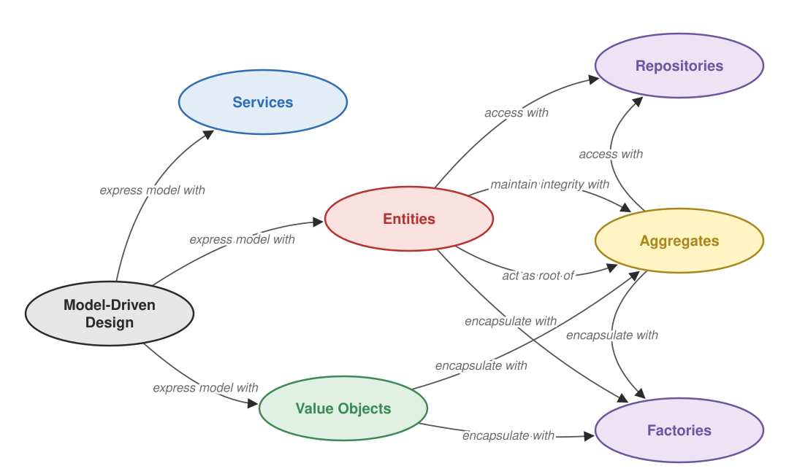
Entities vs. Value Objects
Genus-differentia definition:
- genus: both can be used to model elementary concepts
- differentia: entities have an explicit identity, value objects are interchangeable
Quick modelling examples
Classroom
-
Seats in a classroom may be modelled as value objects
-
Attendees of a class may be modelled as entities
Seats on a plane
-
Numbered seats $\rightarrow$ entities
-
otherwise $\rightarrow$ value objects
Entities vs. Value Objects (constraints)
Value Objects
- Identified by their attributes
- equality compares attributes alone
- Must be immutable: their state is their attributes, which never change
- read-only properties
- lack of state-changing methods
- May be implemented as
- structures in .NET
- data classes in Kotlin, Scala, Python
- records in Java
- Must implement
equals()andhashCode()on JVM- implementation must compare the objects’ attributes
Entities vs. Value Objects (constraints)
Entities
- They have an inherent identity, which never changes during their lifespan
- common modelling: identifier attribute, of some value type
- equality compares identity
- Can be stateful $\Rightarrow$ may have a mutable design
- modifiable properties
- state-changing methods
- May be implemented via classes in most languages
- Must implement
equals()andhashCode()on JVM- implementation must compare (at least) the objects’ identifiers
Entities vs. Value Objects (example)
interface Customer {
+ CustomerID getID()
..
+ String getName()
+ void **setName**(name: String)
+ String getEmail()
+ void **setEmail**(email: String)
}
note left: Entity
interface CustomerID {
+ Object getValue()
}
note right: Value Object
interface TaxCode {
+ String getValue()
}
note left: Value Object
interface VatNumber {
+ long getValue()
}
note right: Value Object
VatNumber -d-|> CustomerID
TaxCode -d-|> CustomerID
Customer *-r- CustomerID
Aggregates and Aggregate Roots
Definition
-
An aggregate is a cluster of entities/value objects treated as a unit for consistency and changes
-
The aggregate root is the single entity in the aggregate that outside objects may reference
-
It guarantees the consistency of the objects it contains
-
It mediates the usage of the composing objects from the outside
- acting as a façade (à la GOF)
-
Outside objects should avoid holding references to composing objects
(cf. Evans, 2003; Vernon, 2013)
Aggregate Roots (constraints)
-
They are usually compound entities
-
They can be or exploit collections to contain composing items
- they may leverage the composite pattern
-
May be better implemented as classes in most programming languages
-
Must implement
equals()andhashCode()on JVM (as any other entity)- equality compares the root’s identity, as for any entity
-
Components of an aggregate should not hold references to components of other aggregates
- that’s why they are called aggregate roots
- notable exception: references to identifiers of other aggregates
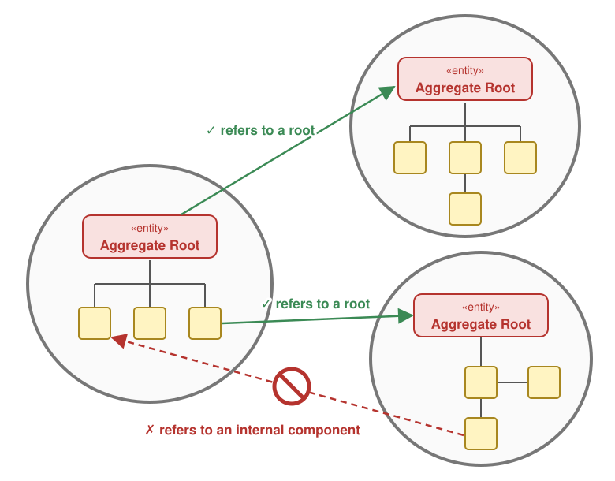
Aggregate Root (example)
package "Customer aggregate" <<Rectangle>> {
interface Customer {
+ CustomerID getID()
..
+ String getName()
+ String getEmail()
}
note left of Customer: aggregate root
interface CustomerID
note left of CustomerID: value object
}
package "Order aggregate" <<Rectangle>> {
interface Order {
+ OrderID getID()
+ CustomerID **getCustomer**()
+ Date getTimestamp()
+ Address getShippingAddress()
+ Iterable<OrderItem> getItems()
..
+ void **setShippingAddress**(address: Address)
+ void **addItem**(product: ProductID, amount: long)
+ void **removeItem**(product: ProductID)
+ Money getTotal()
}
note top of Order: aggregate root
interface OrderID
note bottom of OrderID: value object
interface Address {
+ String getStreet()
+ String getCity()
}
note bottom of Address: value object
interface OrderItem {
+ ProductID getProduct()
+ long getAmount()
+ Money getPrice()
}
note bottom of OrderItem: entity
}
Customer "1" *-d- "1" CustomerID
Order "1" *-d- "1" OrderID
Order "1" *-d- "1" Address
Order "1" *-d- "N" OrderItem
Order .l.> CustomerID: refers to\nthe customer\nby ID
(notice that Order refers to its Customer via the CustomerID only, and that OrderItems refer to products via ProductIDs)
Factories (definition)
Objects aimed at creating other objects
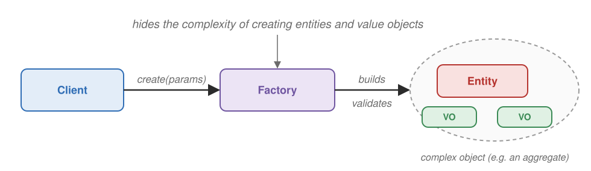
Factories (details)
Purpose
-
Factories encapsulate the creation logic for complex objects
- making it evolvable, interchangeable, replaceable
-
They ease the enforcement of invariants
-
They support dynamic selection of the most adequate implementation
- while hiding the actual implementation choice
Remarks
- DDD’s notion of factory is quite loose
- DDD’s Factories $\supset$ GOF’s Factories $\cup$ Builders $\cup$ …
Factories (constraints)
-
They are usually identity-less and state-less objects
- recall the abstract factory pattern
-
May be implemented as classes in most OOP languages
-
Provide methods to instantiate entities or value objects
-
Usually they require no mutable field/property
-
No need to implement
equals()andhashCode()on JVM
Factories (example)
interface CustomerID
interface TaxCode
interface VatNumber
interface Customer
Customer "1" *-- "1" CustomerID
VatNumber -u-|> CustomerID
TaxCode -u-|> CustomerID
interface CustomerFactory {
+ TaxCode computeTaxCode(String name, String surname, Date birthDate, String birthPlace)
..
+ Customer newCustomerPerson(TaxCode code, String fullName, String email)
+ Customer newCustomerPerson(String name, String surname, Date birthDate, String birthPlace, String email)
..
+ Customer newCustomerCompany(VatNumber code, String fullName, String email)
}
note bottom of CustomerFactory
- method for computing tax codes
- methods for creating person customers
- methods for creating company customers
end note
CustomerFactory -r-> TaxCode: creates
CustomerFactory -u-> Customer: creates
Repositories (definition)
Objects mediating the persistent storage/retrieval of other objects
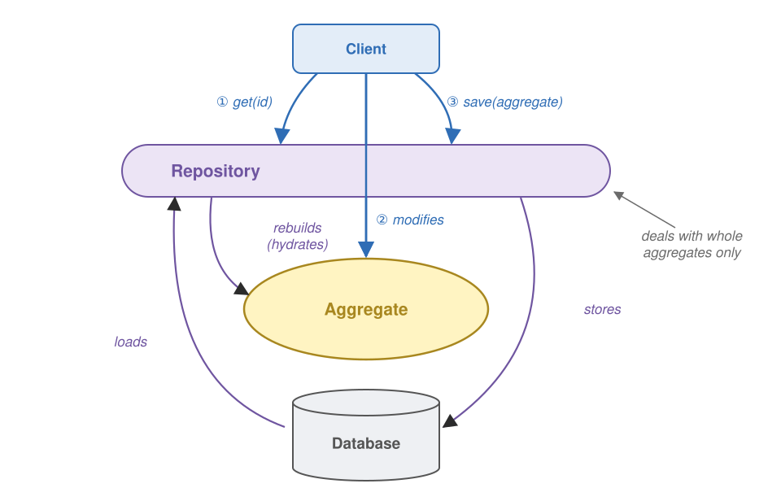
Repositories (details)
Purpose
- Hiding (i.e. be backed by) some database technology
- Possibly realising some sort of object-relational mapping (ORM)
- Storing / retrieving aggregate roots as wholes
- Supporting CRUD operations on aggregate roots, and/or wrapping common queries
- Create, Read, Update, Delete
Remarks
- They may exploit factories for turning retrieved data into objects
- If properly engineered, they avoid the lock-in effect for database technologies
- Design & implementation may require thinking about:
- the architecture,
- the infrastructure,
- the expected load,
- etc.
Repositories (constraints)
-
They are usually identity-less, stateful, and composed objects
- state may consist of the stored objects
- state may consist of DB connections
-
May be implemented as classes in most OOP languages
-
Provide methods to
- add, remove, update aggregate root entities
- select and return one or more entities, possibly in a lazy way
- this should return
Iterable,Collection, orStreamon JVM
- this should return
-
Non-trivial implementations should take care of
- enforcing consistency, in spite of concurrent access
- supporting complex transactions
Repositories (example)
interface CustomerID
interface Customer
Customer "1" *-u- "1" CustomerID
interface CustomerRegistry {
+ Iterable<Customer> getAllCustomers()
..
+ Customer findCustomerById(CustomerID id)
+ Iterable<Customer> findCustomerByName(String name)
+ Iterable<Customer> findCustomerByEmail(String email)
..
+ void addNewCustomer(Customer customer)
+ void updateCustomer(Customer customer)
+ void removeCustomer(Customer customer)
}
CustomerRegistry "1" o--> "N" Customer: contains
CustomerRegistry --> CustomerID: exploits
Services
Operations that do not naturally belong to any entity or value object
Purpose
-
Reifying control-related aspects of the software
-
Wiring aggregates, entities, and value objects together
-
Exposing coarse-grained functionalities to the users
-
Providing a façade for the domain
-
Making the business logic evolvable, interchangeable, replaceable
-
domain service: domain logic spanning several aggregates; lives in the domain layer
-
application service: orchestrates a use case (loads aggregates via repositories, calls them, saves, publishes events); lives in the application layer
-
Rule of thumb: put behaviour on entities/aggregates first; a model of only getters/setters plus services is an anemic domain model (cf. Fowler)
Remarks
- Services may be exposed via RESTful APIs
- Should be designed taking current use cases into account (i.e. design services to be purpose-specific)
- entities/objects should support future use cases, too (i.e. design entities/objects to be general purpose)
Services (constraints)
-
They are usually identity-less, stateless objects
-
May be implemented as classes in OOP languages
- or bare functions in functional languages
-
Commonly provide procedures to do business-related stuff
- e.g. a complex operation…
- … concerning some particular aggregate root
- … which does not support the operation directly through its methods
- (maybe because the operation is use-case specific)
- e.g. proxying an external service
- e.g. a complex operation spanning several aggregates, repositories, factories, etc.
- e.g. a complex operation…
-
Non-trivial implementations should take care of
- supporting concurrent access to the service’s facilities
- exposing domain events to the external world
Services (example)
interface OrderManagementService {
+ void performOrder(Order order)
}
interface Order {
+ OrderID getId()
+ CustomerID getCustomer()
+ void setCustomer(CustomerID customer)
+ Date getTimestamp()
+ void setTimestamp(Date timestamp)
+ Map<ProductID, Long> getAmounts()
}
interface OrderID
interface CustomerID
interface ProductID
interface OrderStore
Order "1" *-r- "1" OrderID
Order "1" *-d- "1" CustomerID
Order "1" *-u- "N" ProductID
OrderStore "1" *-- "N" Order
OrderManagementService ..> Order: handles
OrderManagementService ..> OrderStore: updates
note bottom of OrderStore: repository
note top of Order: entity (aggregate root)
note right of OrderID: value object
note right of ProductID: value object
note right of CustomerID: value object
note top of OrderManagementService: service
OrderID -u[hidden]- ProductID
OrderID -d[hidden]- CustomerID
Factories enable Dependency Injection
- Services depend on repositories and factories (and possibly on other services)
- e.g.
OrderManagementServiceneeds anOrderStoreto save orders
- e.g.
- Who creates these dependencies?
- if the service calls
new SqlOrderStore()itself, it is bound to that implementation - … and it can hardly be tested without a real database
- if the service calls
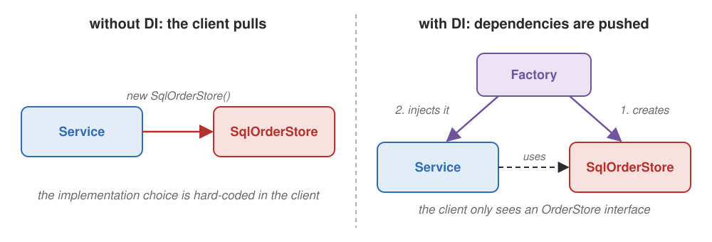
- Factories already hide the implementation choice
- Dependency Injection (DI) goes one step further: the client does not create its dependencies, it receives them
Dependency inversion
Goal: minimise dependencies among types, to make implementations interchangeable
- Let interfaces depend on interfaces only
- Let classes depend on interfaces, never on other classes
- built-in types (e.g.
String,LocalDate) are tolerated exceptions
- built-in types (e.g.
- Delay the choice of the actual implementation of each interface as much as possible
- Do not leak implementation types into public APIs
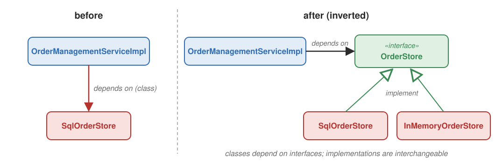
Dependency Injection (concept)
Interfaces are separated from classes; the wiring between them is delayed and performed outside the classes using them
- Design & segregate interfaces
- interface members only expose interface (or built-in) types: natural after DDD
- interfaces and implementations in separate modules (e.g.
:domainvs.:storage)
- Implement classes relying on interfaces only
- fields, parameters, return types: interfaces (private members too)
- expose a mechanism to inject the actual implementations:
- constructor injection: dependencies are constructor parameters
- the object is always complete and consistent $\rightarrow$ preferred
- setter injection: one setter per dependency
- more flexible, yet objects may be left in inconsistent states
- constructor injection: dependencies are constructor parameters
- Wire interfaces and classes at runtime
- choosing the most adequate implementation for the situation at hand (production, test, etc.)
Inversion of Control
- Without DI, an object controls the creation of its own dependencies
- With DI, this control is inverted: some external entity creates the dependencies and passes them in
- the composition root: the (only) place where implementations are chosen and wired
- e.g. the
mainmethod, or an application-level factory
- e.g. the
- or a DI container (a.k.a. IoC container), i.e. a library doing the wiring for us
- the composition root: the (only) place where implementations are chosen and wired
- Hollywood principle: “don’t call us, we’ll call you”
- Dependency Injection is a particular form of Inversion of Control (IoC)
Remark
- A factory alone just moves the
newsomewhere else: the client now depends on the factory - It becomes DI when the factory is the composition root, i.e. it creates the objects and injects them into each other
DI in Java (example, pt. 1): implementation
public interface OrderStore { void add(Order order); /* ... */ }
class OrderManagementServiceImpl implements OrderManagementService {
private final OrderStore store; // interface
private final CustomerFactory customers; // interface
// constructor injection: dependencies are received, not created
OrderManagementServiceImpl(OrderStore store, CustomerFactory customers) {
this.store = Objects.requireNonNull(store);
this.customers = Objects.requireNonNull(customers);
}
@Override
public void performOrder(Order order) {
// ... validate the order, possibly via customers ...
store.add(order);
}
}
- The service only mentions interfaces:
OrderStore,CustomerFactory,Order - No
newfor any dependency $\rightarrow$ the implementation choice is somebody else’s business
DI in Java (example, pt. 2): the composition root
public class ApplicationFactory { // the composition root
public OrderStore orderStore() {
return new SqlOrderStore(System.getenv("DB_URL"));
}
public CustomerFactory customerFactory() {
return new CustomerFactoryImpl();
}
public OrderManagementService orderManagementService() {
return new OrderManagementServiceImpl(orderStore(), customerFactory());
}
}
// in main():
OrderManagementService service = new ApplicationFactory().orderManagementService();
- The factory is the only class mentioning implementation classes
- which can stay package-private (not leaked into the API)
- A hand-written factory is a minimal DI container
- one method per interface, specifying which implementation and how to initialise it
- In a layered architecture, this is the job of the outermost module (cf. modules)
DI eases testability
- The class under test does not create its dependencies $\rightarrow$ the test decides what to pass in
- no need to edit production code, nor to patch it with static mocking tricks
Unit tests: inject test doubles (stubs, fakes, mocks)
@Test
void performOrderStoresTheOrder() {
OrderStore store = mock(OrderStore.class); // Mockito
var service = new OrderManagementServiceImpl(
store, new CustomerFactoryImpl());
service.performOrder(order);
verify(store).add(order);
}
- tests the service in isolation, no DB needed
Integration tests: inject real (yet lightweight) components
@Test
void orderIsActuallyStored() {
var store = new InMemoryOrderStore();
var service = new OrderManagementServiceImpl(
store, new CustomerFactoryImpl());
service.performOrder(order);
assertTrue(store.contains(order));
}
- or a
SqlOrderStoreon a throw-away DB (e.g. via Testcontainers)
- Each test acts as a test-specific composition root
DI eases testability (overview)
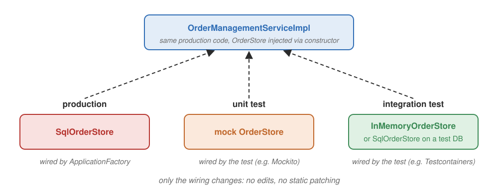
- Only the wiring changes across production, unit tests, and integration tests
- the production code is tested as is
- Dependencies that are hard to control in tests (DB, network, clock, randomness) should be injected as well
- e.g. inject a
java.time.Clockinstead of callingLocalDateTime.now()
- e.g. inject a
DI technologies
- Hand-written factories become tedious as the dependency graph grows
- DI containers automate the wiring. They let developers:
- register the chosen implementation for each interface (a.k.a. binding)
- specify its lifetime: singleton (one shared instance), transient (new instance per request), scoped (one per scope, e.g. per HTTP request)
- retrieve (or have injected) an object for a given interface
| Technology | Language | Notes | Docs |
|---|---|---|---|
| Jakarta Dependency Injection (ex JSR-330) | Java | standard annotations (@Inject, @Singleton), no container |
spec |
| Jakarta CDI | Java | standard container of Jakarta EE (e.g. Quarkus) | spec |
| Spring Framework | Java, Kotlin | the most widespread container, runtime reflection | docs |
| Google Guice | Java | bindings declared in modules, runtime | docs |
| Dagger 2 / Hilt | Java, Kotlin (Android) | wiring code generated at compile time | docs |
| Koin | Kotlin (multiplatform) | Kotlin DSL, no reflection | docs |
Microsoft.Extensions.DependencyInjection |
C# | IServiceCollection + IServiceProvider |
docs |
- Containers support overriding bindings in tests too
- e.g. Spring’s
@MockitoBean, Guice’sModules.override(...)
- e.g. Spring’s
Domain Events (definition)
A value-like object capturing some domain-related event
(i.e., an observable variation in the domain, which is relevant to the software)
- actually, only the event notification/description is reified to a type
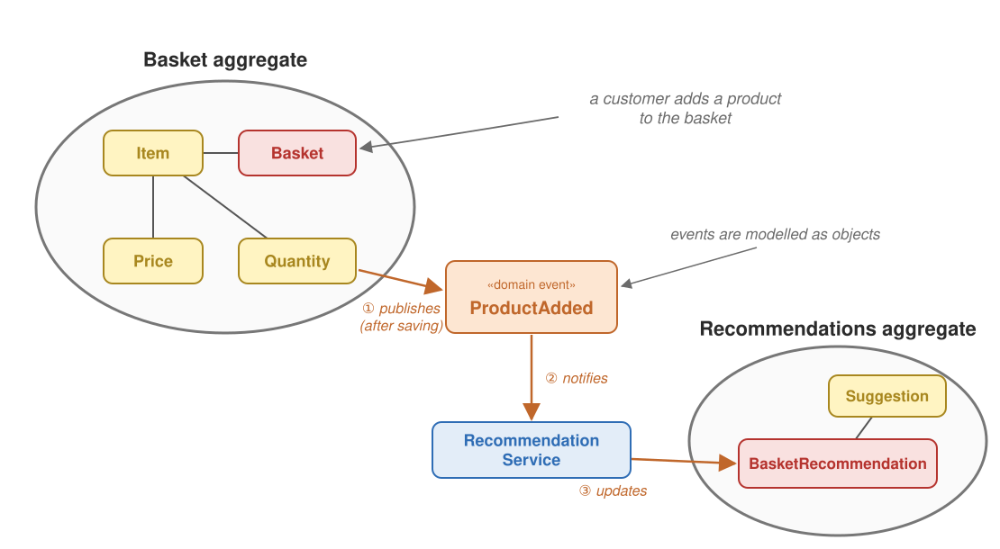
Domain Events (details)
Purpose
- Propagate changes among portions of the domain model (e.g. contexts, aggregates, entities, etc.)
- Record changes concerning the domain
Remarks
-
Strong relation with the observer pattern (i.e. publish-subscribe)
-
Strong relation with the event sourcing approach (described later)
-
Strong relation with the CQRS pattern (described later)
Domain Events (constraints)
-
They are usually time-stamped value objects
-
May be implemented as data-classes or records
-
They represent a relevant variation in the domain
- e.g. a change in the state of some entity / repository
-
Event sources & listeners shall be identified too
- who is generating the event?
- who is consuming the event?
-
Infrastructural components may be devoted to propagate events across contexts
- e.g. a message broker, a message queue, etc.
-
Common convention: one type per event, named in the past tense (e.g.
OrderPlaced,OrderCancelled) (cf. Vernon, 2013) -
[Teacher’s Suggestion]: use a neutral type (e.g.
OrderEvent) plus a kind/discriminator field when many events share the same payload
Domain Events (example)
interface OrderManagementService {
+ void performOrder(Order order)
..
+ void **notifyOrderPerformed**(OrderEvent event)
}
interface OrderEvent {
+ OrderID getID()
+ CustomerID getCustomer()
+ Date **getTimestamp**()
+ Map<ProductID, Long> getAmounts()
}
interface OrderID
interface CustomerID
interface ProductID
OrderEvent "1" *-u- "1" OrderID
OrderEvent "1" *-r- "1" CustomerID
OrderEvent "1" *-d- "N" ProductID
OrderEvent .. OrderManagementService
note left of OrderEvent: domain event
note left of OrderID: value object
note left of ProductID: value object
note right of CustomerID: value object
note right of OrderManagementService: service
Strategic Design
Towards DDD patterns
Further notions involving contexts
-
Bounded Context: enforce a model’s boundaries & make them explicit
-
Context Map: providing a global view on the domain and its contexts
Actual definitions
Context Boundary
The boundary of a context and its software model should be explicit. This is helpful from several perspectives:
- technical (e.g., dependencies among classes/interfaces)
- physical (e.g., common database, common facilities)
- organizational (e.g. people/teams maintaining/using the code)
Context Map
A map of all the contexts in a domain and their boundaries
- and their points of contact
- e.g. their dependencies, homonyms, false friends, etc.
- providing the whole picture of the domain
Example of bounded context map
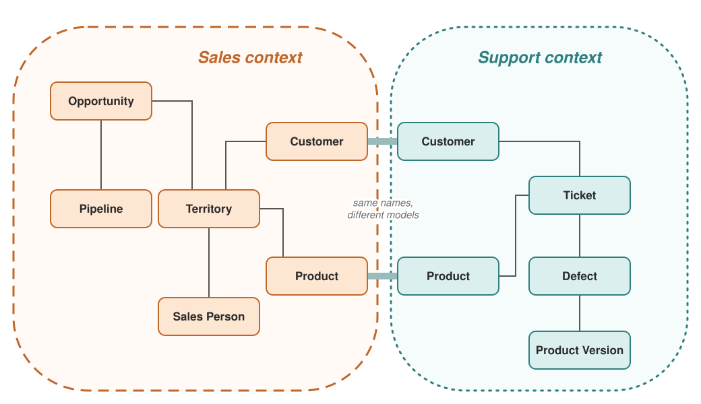
(source: Fowler)
Bounded Contexts & Context Maps (best practices)
-
Clearly identify & represent boundaries among contexts
-
Avoid responsibility diffusion over a single context
- one responsible person / team for each context
-
Avoid changes in the model for problems arising outside the context
- rather, extend the domain by creating new contexts
-
Enforce context’s cohesion via automated unit and integration testing
- to be (re)executed as frequently as possible
Model integrity problem
How to preserve the integrity of the model?
-
As the domain evolves, the software model should evolve with it
- in order to maintain the coupling
-
Yet, the domain rarely changes as a whole
- more commonly, it changes in a context-specific way
-
Contexts are bounded, but not isolated
- so are models, which may depend on each other
-
Changes to a context and its model may propagate to other contexts / models
Domain / model changes are critical and should be done carefully
Model integrity patterns
- Shared kernel: sharing a common model among contexts
- Customer–supplier: the downstream (customer) team requests changes in the supplier model
- Conformist: one model’s team reacts to changes of some model they depend on
- Anti-corruption layer: a model’s team isolates itself from another model
Purposes
-
Preserve the integrity of the model w.r.t. the domain
-
Minimise the potential impact / reach of changes
- each context should be as independent as possible
- each change affects as few contexts as possible
Model integrity patterns (background, pt. 1)
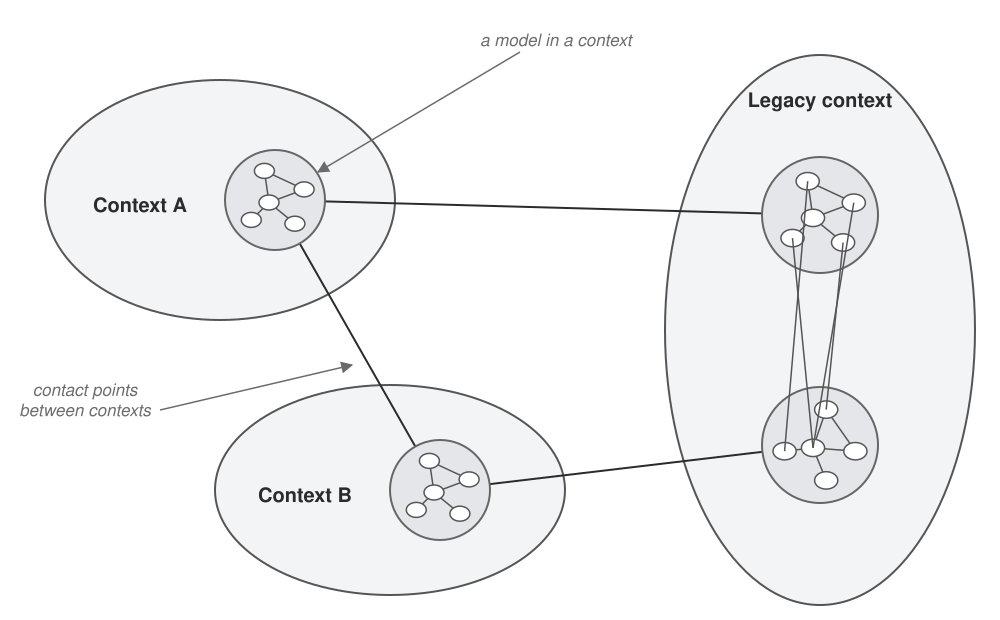
- Context maps highlight relations among contexts
- yet, not all relations are equal, nor symmetric
Model integrity patterns (background, pt. 2)
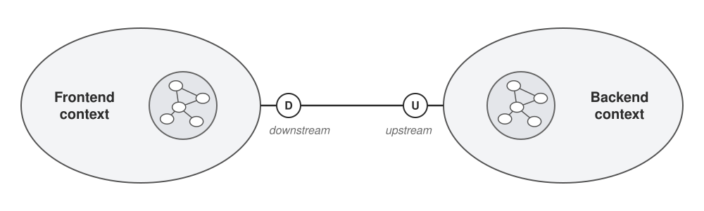
Each relation among 2 contexts usually involves 2 ends/roles:
- upstream end, i.e. the one providing functionalities
- downstream end, i.e. the one consuming functionalities
- the downstream depends upon the upstream, but not vice versa
Integration among contexts $\leftrightarrow$ interaction among teams
- several strategies may be employed, depending on
- mutual trust* among teams
- ease of communication/cooperation among teams
- technical / organizational / administrative / legal constraints
*trust $\approx$ willingness to collaborate + seek stability
Shared Kernel
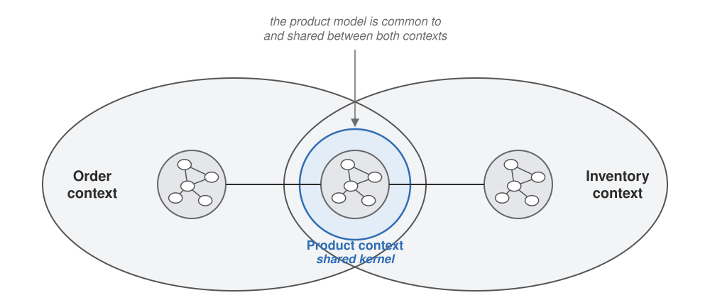
-
Best when: multiple contexts share the same team / organization / product
-
Key idea: factorise common portions of the model into a shared kernel
-
Upstream and downstream collaborate in designing / developing / maintaining the model
- they are peers
-
Keeping the kernel as small as possible is fundamental
Customer–Supplier
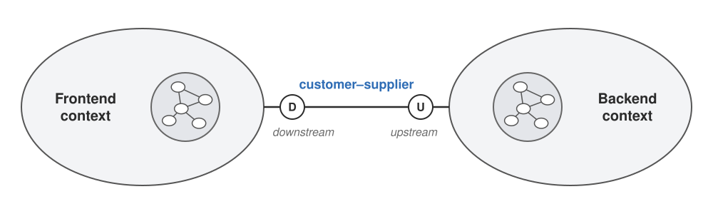
-
Best when:
- multiple teams
- mutual trust
- good communication
-
Key idea:
- upstream acts as supplier, downstream acts as customer
- both sides collaborate to maximise integration among their models
- and interoperability among their software
-
Customers may ask for features, suppliers will do their best to provide them
-
Suppliers shall warn before changing their model
Conformist
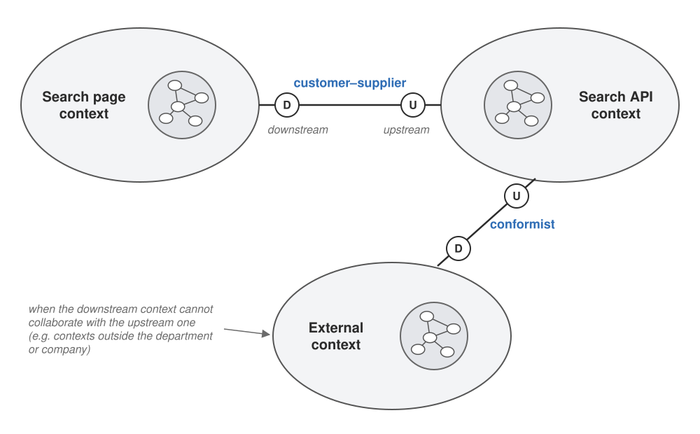
-
Best when:
- multiple teams
- poor communication / different pace
- some trust
-
Key idea: downstream must conform to the upstream, reactively
- adapting their model accordingly
- whenever the upstream’s one changes
Anti-corruption layer
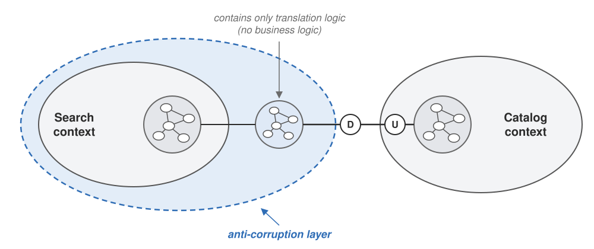
-
Best when:
- multiple teams
- poor communication
- poor trust
-
If upstream cannot be trusted, and interaction is pointless…
- e.g. legacy code, poorly maintained library, etc.
-
… downstream must defend itself against unexpected / unanticipated change
-
The upstream’s model is then reverse engineered & adapted
- e.g. often, repository types are anti-corruption layers for DB technologies
Layered (onion) Architecture
Layered Architecture (disclaimer)
-
DDD does not enforce a particular architecture
-
Any is fine as long as the model keeps its integrity
-
Layered architectures are well suited to preserve models’ integrity
-
The same dependency rule (outer depends on inner, never the converse) underlies hexagonal (ports & adapters, cf. Cockburn, 2005), onion, and clean architectures
- in hexagonal terms, domain/application define ports (e.g. repository interfaces); outer layers provide adapters (e.g. DB-backed repositories, REST controllers)
Layered (onion) architecture (concept)
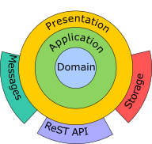
- outer layers depend on inner ones
- the converse is not true
Layered (onion) architecture (explanation)
-
Domain layer: contains the domain model (entities, values, events, aggregates, etc.)
- must support a wide range of applications
- has no dependency on any other layer
-
Application layer: contains services providing business logic
- supports a particular use case via services
- depends on the domain layer
-
Presentation layer: provides conversion facilities to/from representation formats
- e.g. JSON, BSON, XML, YAML, XDR, Avro, HTML, etc.
- depends on the domain layer (and, possibly, on the application layer)
- e.g. JSON, BSON, XML, YAML, XDR, Avro, HTML, etc.
-
Storage layer: supports persistent storage/retrieval of domain data
- this is where repositories are implemented
- may involve some DB technology
- depends on the domain layer (and, possibly, on the application layer)
-
Interface layers (e.g. ReST API, MOM, View): let external entities access the software
- via a GUI, or via some remote interface such as HTTP
Enforcing the architecture in the code
-
Layering may be enforced in the code
-
By mapping layers into modules
- module $\approx$ packaging unit
- e.g. Gradle sub-projects, Maven modules, .NET assemblies, etc.
- each module having its own build dependencies
- module $\approx$ packaging unit
top to bottom direction component ":domain" as domain component ":application" as application component ":presentation" as presentation component "third-party serialization library" as gson component "third-party DB client library" as db component ":storage" as storage component ":web-api" as server component ":message-queue" as mq component ":command-line" as cli component product application ..> domain presentation ..> application server ..> presentation mq ..> presentation cli ..> presentation storage ..> application presentation ..> gson storage ..> db product ..> server product ..> storage product ..> mq
productis the composition root: it wires implementations from all modules (cf. Dependency Injection)
Advanced aspects of DDD
Event sourcing (preliminaries)
- Whenever there is a mutable entity …
- … whose state evolution over time must be tracked …
- … state transitions can be memorised in 2 ways:
- one may track the current state
- or the flow of variations
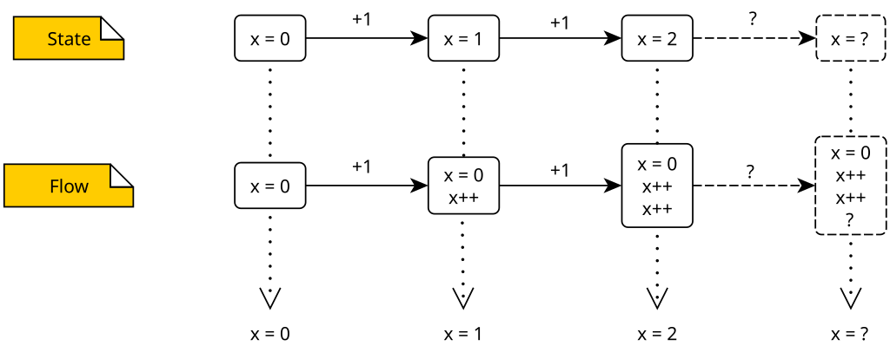
Event sourcing
A pattern where domain events are reified into time-stamped data and the whole evolution of a system is persistently stored
- perfect match with DDD as domain events are first-class citizens
(cf. Fowler, Event Sourcing)
Event sourcing (pros & cons)
Benefits
-
Historical data can be analysed, to serve several purposes
- e.g. predictive maintenance, optimisation, analysing & anticipating faults
-
Past situations can be replayed
- it improves debugging and enables measurements
-
Enables complex event detection & reaction
-
Enables CQRS (described later)
Limitations
- A lot of data is generated and must be stored, which costs space
- Reconstructing the (current) state costs time
Command–Query Responsibility Segregation (CQRS)
-
Advanced pattern for building highly-scalable applications
-
It is often combined with event sourcing, but does not require it (cf. Fowler, CQRS)
-
It can deliver reactive, eventually consistent solutions where:
- context boundaries can be easily enforced
- single responsibility principle is applied extensively
CQRS definition
Split the domain and application layers to segregate read/write responsibilities
(cf. Fowler, CQRS; Fowler, Event Sourcing)
-
Read model (a.k.a. view or query model)
- accepts queries aimed at observing the state of the system
-
Write model (a.k.a. command model)
- accepts commands aimed at altering the state of the system
CQRS concept
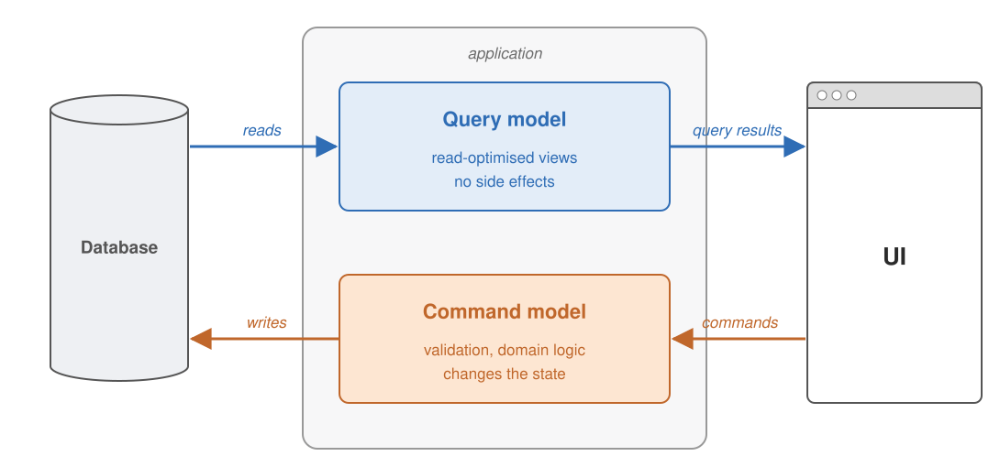
(source: Fowler)
CQRS workflow (writing)
Whenever users want to perform an action in the system:
- they create a command and forward it to the write model
- i.e. an object describing a variation to be applied to some domain aspect
- the command is validated by the write model; if accepted, it produces one or more domain events
- with event sourcing, the events (not commands) are appended to an event store
CQRS workflow (reading)
Whenever users want to inspect/observe the system at time $t$:
- they perform a query on the read model
- asking for the state of the system at time $t$
- e.g. $t$ $\equiv$ now
- the read model is a projection built from the events up to time $t$
- it returns a read-optimised representation of the system state at time $t$
CQRS – When is the read model updated?
A projection computes a read model by applying the events recorded up to time $t$
-
If read and write data are stored on different databases
- projecting events updates the query database
- the query database should be read-efficient
- the event store should be write-efficient
-
Several, non-mutually-exclusive strategies:
- eager: events are projected as soon as they are received
- on read: events are projected when a query is read
- scheduled: events are projected in the background, periodically
Exercises
Repository: https://github.com/unibo-spe/ddd-exercise, branch exercise
(solutions on branch master)
Exercise 1 – Simple Store (pt. 1)
A simple domain keeping track of: customers, products, and orders.
Customers
-
Customers can either be companies or persons
-
Companies are identified by a VAT number
-
Persons are identified by tax codes
-
In any case a name and email are recorded for each customer
-
Both the name and email may vary over time
Products
-
Products are identified by name and type/category
-
They have a nominal price, expressed using some currency
-
The availability of each product is tracked as well
-
Both the price and the available quantity may vary over time
Exercise 1 – Simple Store (pt. 2)
Money and exchange rates
-
Money is represented by a decimal value and a currency
-
Currencies are represented by a name, a symbol and an acronym
- e.g. Euro, EUR, €
- e.g. US Dollar, USD, $
-
Exchange rates keep track of the conversion rate
- from a source currency
- to a destination currency
- at a particular moment
-
Information about exchange rates can be obtained from the Internet
-
We can compute the price of each product, in any currency, at any moment
Exercise 1 – Simple Store (pt. 3)
Orders
-
Orders are identified by a serial number
-
They keep track of the products ordered by a customer
- and the number of copies ordered for each product
-
Also, orders keep track of when they have been performed
-
All such information may be modified before the order is delivered
-
When a new order is registered, many actions should be performed in reaction
-
It must be possible to compute the actual total price of an order
- at a particular moment, using a particular currency
Exercise 1 – Simple Store (pt. 4)
TO-DO
- Read informal domain description
- Identify the main domain concepts composing the ubiquitous language
- Model the domain as Java types (classes or interfaces)
- the model should include entities, value objects, repositories, factories, and services
- Structure the Java types according to some module structure compliant with hexagonal architecture
- i.e. put code into either the
domainorapplicationmodules
- i.e. put code into either the
- Sketch tests and, then, implementation for at least one
- entity
- value object
- factory
- repository
- service
- Wire services, repositories, and factories via constructor injection
- write at least one integration test injecting an in-memory repository
Exercise 2 – Trivial CQRS (pt. 1)
- Very simple repository type: the
Counter - It contains 1
longnumber, initially set to0 - The value may be read or changed arbitrarily
- Whenever the value changes, a new domain event is published, of type
Variation - However, the repository only memorises the current value of the counter
Exercise 2 – Trivial CQRS (pt. 2)
TO-DO
- Switch the design towards event sourcing, by memorising variations instead of snapshots.
- Implement the CQRS pattern by splitting the repository into 2 parts:
- a write-model for storing variations
- a read-model for retrieving a snapshot of the counter’s value at a given moment
In practice:
- provide implementations for the
CounterReaderandCounterWriterinterfaces - optionally, test those implementations
Exercise 3 – Anti-corruption layer (pt. 1)
-
Very simple domain:
Tables- i.e. 2-D containers of
Rows… - … where each row contains one or more
Stringvalues
- i.e. 2-D containers of
-
Functionalities for CSV import/export are missing and need to be implemented via third-party libraries
- Apache Commons CSV
- Guide here: https://www.baeldung.com/apache-commons-csv
- OpenCSV
- Guide here: https://www.baeldung.com/opencsv
- Apache Commons CSV
Exercise 3 – Anti-corruption layer (pt. 2)
TO-DO
- Extend the model of our domain with new interfaces supporting CSV parsing / writing functionalities
- Design the interfaces so that they are agnostic of the third-party libraries
- without corrupting the domain model with library-specific types
- Provide implementations for the interfaces, using one of the two libraries
- Sketch tests for the implementations
- Provide implementations for the interfaces, using the other library
- Use the same tests as above to prove the two implementations work the same way